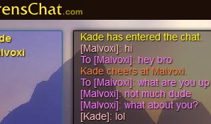
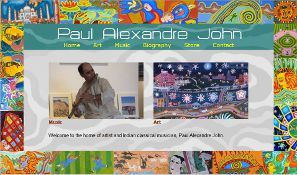
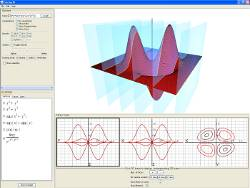

What are my skills?
- Bilingual: English and Spanish
- Programming languages: Java, C++, OpenGL
- Web design: HTML, CSS, PHP, Javascript, JQuery, Symfony, and MySQL
What have I worked on?

Co-founder / Head Web Engineer
April 2011-Present
What is it?
- World of Warcraft-inspired live-chat application written with the Symfony framework.
Why is it special?
- It faithfully recreates the experience of chatting in WoW, while adding new and fresh ways for interactions between users.
- It's a fun way for players to get their WoW-fix without having to play.
Tools used
Web Engineer
2008
What is it?
- The company website for Automóviles Canalcar, a leader in the Spanish automobile industry.
What did I do?
- Co-designed and implemented a new website for Automóviles Canalcar.
- Analyzed visitor data and optimized content, which reduced bounce rate by 10% and increased average visit length by 20%.
What happened?
- The new design was a hit and served as the template for the latest version of the site.

Web Engineer
2008-present
What is it?
- The website and online store for artist and musician Paul Alexandre John.
Why is it noteworthy?
- I drew heavily on the artist's work to create a design that was simple, yet conveyed the feeling of his artwork and music.
- It was my first foray into web development.
Tools used

2006-2007
What is it?
- My Honors Thesis
- An interactive, visual learning tool for exploring fundamental multivariable calculus concepts.
What am I proud of?
- Designing and coding the application (~7000 lines of code) using Java and OpenGL.
- Implementing a basic three-variable function plotter, a level curves module, a limits module, and a tangent plane approximation module.
- Implementing an adaptive algorithm for drawing level curves on a surface (namely, z-axis level curves).
Tools used
Where did I study?
Bachelor of Arts in Computer Science
Bachelor of Arts in Mathematics
Cumulative GPA: 3.93/4.0
2003-2007
Achievements
- Summa Cum Laude
- Honors Program - Thesis: CalcSee3D: A Visualization Tool for Multivariable Calculus
- Won the William R. and Marcelyn L. Gordon Award (2007), the Archibald Granville Bush Award (2005, 2006),
Junior Awards for Outstanding Academic Achievement in Computer Science and Mathematics (2006).